کتابخانه ویراستاری متن فارسی برای PHP


استفاده و توسعه بدون مرز با مجوز MIT
با حجم کمتر از 40 کیلوبایت
پردازش سریع در کمتر از 0.02 میلیثانیه
استفاده آسان با تنها 2 خط کد!
composer require alirezasedghi/virastar// Require Composer's autoloader.
require 'vendor/autoload.php';
// Using Virastar namespace.
use Alirezasedghi\Virastar\Virastar;
$virastar = new Virastar();
$text = "فارسي را كمی درست تر می نويسيم";
$cleaned = $virastar->cleanup($text);
echo $cleaned; // Outputs: "فارسی را کمی درستتر مینویسیم"نوع: آرایه
$virastar = new Virastar([
"fix_english_numbers": false,
"cleanup_line_breaks": false
]);
Virastar comes with a list of options to control its behavior.
normalize_eol
default: true
replace windows end of lines with unix eol (\n)
decode_html_entities
default: true
converts numeral and selected html character-sets into original characters
fix_dashes
default: true
replaces triple dash to mdash
replaces double dash to ndash
fix_three_dots
default: true
removes spaces between dots
replaces three dots with ellipsis character
normalize_ellipsis
default: true
replaces more than one ellipsis with one
replaces (space|tab|zwnj) after ellipsis with one space
normalize_dates
default: true
re-orders date parts with slash as delimiter
fix_english_quotes_pairs
default: true
replaces english quote pairs (“”) with their persian equivalent («»)
fix_english_quotes
default: true
replaces english quote marks with their persian equivalent
fix_hamzeh
default: true
replaces ه followed by (space|ZWNJ|lrm) follow by ی with هٔ
replaces ه followed by (space|ZWNJ|lrm|nothing) follow by ء with هٔ
replaces هٓ or single-character ۀ with the standard هٔ
fix_hamzeh_arabic
default: false
converts arabic hamzeh ة to هٔ
cleanup_rlm
default: true
converts Right-to-left marks followed by persian characters to zero-width non-joiners (ZWNJ)
cleanup_zwnj
default: true
converts all soft hyphens () into zwnj
removes more than one zwnj
cleans zwnj after characters that don't connect to the next
cleans zwnj before and after numbers, english words, spaces and punctuations
removes unnecessary zwnj on start/end of each line
fix_arabic_numbers
default: true
replaces arabic numbers with their persian equivalent
fix_english_numbers
default: true
replaces english numbers with their persian equivalent
fix_numeral_symbols
default: true
replaces english percent signs (U+066A)
replaces dots between numbers into decimal separator (U+066B)
replaces commas between numbers into thousands separator (U+066C)
fix_misc_non_persian_chars
default: true
replaces arabic normal/swash kaf with its persian equivalent
replaces arabic/urdu/pushtu/uyghur yeh with its persian equivalent
replaces kurdish he with its persian equivalent
fix_punctuations
default: true
replaces ,, ; with its persian equivalent
fix_question_mark
default: true
replaces question marks with its persian equivalent
fix_prefix_spacing
default: true
puts zwnj between the word and the prefix:
mi*, nemi*, bi*
fix_suffix_spacing
default: true
puts zwnj between the word and the suffix:
*ha, *haye
*am, *at, *ash, *ei, *eid, *eem, *and, *man, *tan, *shan
*tar, *tari, *tarin
*hayee, *hayam, *hayat, *hayash, *hayetan, *hayeman, *hayeshan
fix_suffix_misc
default: true
replaces ه followed by ئ or ی, and then by ی, with های
fix_spacing_for_braces_and_quotes
default: true
removes inside spaces and more than one outside for (), [], {}, “” and «»
fix_spacing_for_punctuations
default: true
removes space before punctuations
removes more than one space after punctuations, except followed by new-lines
removes space after colon that separates time parts
removes space after dots in numbers
removes space before some common domain tlds
removes space between question and exclamation marks
removes space between same marks
fix_diacritics
default: true
cleans zwnj before diacritic characters
cleans more than one diacritic characters
clean spaces before diacritic characters
remove_diacritics
default: false
removes all diacritic characters
fix_persian_glyphs
default: true
converts incorrect persian glyphs to standard characters
fix_misc_spacing
default: true
removes space before parentheses on misc cases
removes space before braces containing numbers
cleanup_spacing
default: true
replaces more than one space with just a single one
cleans whitespace/zwnj between new-lines
cleanup_line_breaks
default: true
cleans more than two contiguous line breaks
cleanup_begin_and_end
default: true
removes space/tab/zwnj/nbsp from the beginning of the new-lines
remove spaces, tabs, zwnj, direction marks and new lines from the beginning and end of text
markdown
markdown_normalize_braces
default: true
remove spaces between [] and () ([text] (link) into [text](link))
removes space between ! and opening brace (! [alt](src) into )
remove spaces inside double (), [], {} ([[ text ]] into [[text]])
remove spaces between double (), [], {} ([[text] ] into [[text]])
markdown_normalize_lists
default: true
removes extra lines between two items on a markdown list beginning with -, * or #
skip_markdown_ordered_lists_numbers_conversion
default: false
skips converting english numbers of ordered lists in markdown
aggressive editing
cleanup_extra_marks
default: true
replaces more than one exclamation mark with just one
replaces more than one english or persian question mark with just one
re-orders consecutive marks: ?! into !?
kashidas_as_parenthetic
default: true
replaces kashidas to ndash in parenthetic
cleanup_kashidas
default: true
converts kashida between numbers to ndash
removes all kashidas between non-whitespace characters
extras
preserve_front_matter
default: true
preserves front matter data in the text
preserve_HTML
default: true
preserves all html tags in the text
preserve_comments
default: true
preserves all html comments in the text
preserve_entities
default: true
preserves all html entities in the text
preserve_URIs
default: true
preserves all uri strings in the text
preserve_brackets
default: false
preserves strings inside square brackets ([])
preserve_braces
default: false
preserves strings inside curly braces ({})
preserve_nbsp
default: true
preserves all no-break space entities in the text